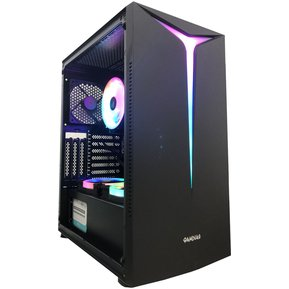

buildding02

- Especificaciones: Torre: Lian Li Lancool 215 ARGB Cristal Templado USB 30 Negra
- Fuente de alimentación: Asus TUF Gaming 650B 80 Plus Bronze 650W o Similar (Según disponibilidad)
- Procesador: Intel Core i5-12600K 4.9 GHz
- Ventilador: Forgeon Solarian Cooler 4Pipes Black ARGB Ventilador CPU 120mm / Noctua NH-U12S o similar ( Según disponibilidad )
- Placa Base: Asus TUF GAMING Z690-PLUS D4
- Almacenamiento Seagate FireCuda 520 SSD 1TB M.2 PCIe 4.0 3D TLC NVMe o Similar (Según disponibilidad)
- Memoria: DDR4 3200 MHz 16GB 2x8GB CL16
- Gráfica: Asus TUF Gaming GeForce RTX 3060 Ti 8GB GDDR6 o Similar (Según disponibilidad)
- Conexiones delanteras:
- 2 x USB 3.1 Gen1
- 1 x auriculares
- 1 x micrófono
- Conexiones traseras:
- 1 x USB 3.2 Gen 2x2 port (1 x USB Type-C®)
- 2 x USB 3.2 Gen 2 ports (2 x Type-A)
- 5 x USB 3.2 Gen 1 ports (4 x Type-A + 1 x USB Type-C®)
- 1 x DisplayPort
- 1 x HDMI® port
- 1 x Intel® 2.5Gb Ethernet port
- 5 x Audio jacks
- 1 x Optical S/PDIF out port
- Dimensiones: 251 x 545 x 552 mm (WxDxH)